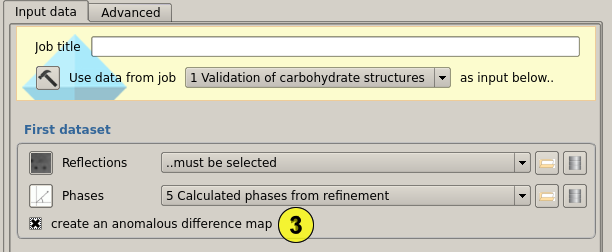

This task can calculate weighted difference map coefficients (two datasets, fill (1) and (2) in) and anomalous difference map coefficients (one dataset, fill (1) in and tick (3), intensity or amplitude pairs are required).
You can perform basic filtering on the produced map coefficients. For instance, a positive isotropic B-factor can be used for blurring the electron density, or a negative one for sharpening it (4). A map file can also be produced by selecting option (5). This will trigger a cfft run and output the map file in CCP4 format.